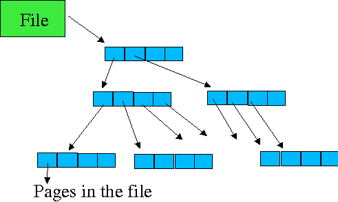

Yaffs can be built as either a kernel module (ie. a Linux file system) or as an application.
Of course the goal is to build yaffs as a file system running on top of real NAND flash, but yaffs can be built to run on a RAM emulation layer for in-kernel testing without NAND flash in the system.
Building as an application allows the yaffs_guts algorithms to be tested/debugged in a more friendly debugging environment. The test harness is in yaffsdev.c
YAFFS can be built to run with either mtd or RAM emulation, or both. The file system that interfaces to mtd is called yaffs, the file system that uses internal ram is called yaffsram. YAFFS simultaneously supports both if they are enabled.
Hack the Makefile and change the KERNELDIR define to your kernel directory.
If you don't have mtd support in your kernel, then you might need to turn off USE_MTD otherwise the yaffs module might not load.
Type make clean; make to build yaffs
Load yaffs as a module by typing /sbin/insmod yaffs.o (ya gotta be root!).
Create a mount point eg. mkdir /mnt/y
To mount the RAM emulation version of yaffs, mount -t yaffsram none /mnt/y
Alternatively, to mount the mtd version of yaffs, mount -t yaffs /dev/mtd0 /mnt/y
All data types are defined in yaffs_guts.h
Yaffs uses the following major objects:
yaffs_Object: A yaffs_Object can be a file, directory, symlink or hardlink. The yaffs_Objects "know" about their corresponding yaffs_ObjectHeader in NAND and the data for that object. yaffs_Objects also bind together the directory structure as follows:
parent: pointer to the yaffs_Object that is a parent of this yaffs_Object in the directory structure.
siblings: this field is used to link together a list of all the yaffs_Objects in the same directory.
children: if the object is a directory, then children holds the head of the list of objects in the directory.
yaffs_Tnode: yaffs_Tnodes form a tree structure that speeds up the search for data chunks in a file. As the file grows in size, the levels increase. The Tnodes are a constant size (32 bytes). Level 0 (ie the lowest level) comprise 16 2-byte entries giving an index used to search for the chunkId. Tnodes at other levels comprise 8 4-byte pointer entries to other tnodes lower in the tree.
yaffs_Device: this holds the device context and is in some ways analogous to the VFS superblock. It stores the data used to access the mtd as well as function pointers to access the NAND data.
The Tnodes and Objects are allocated in groups to reduce memory allocation/freeing overheads. Freed up tnodes and objects are kept in a free list and re-used.
struct yaffs_ObjectStruct
{
__u8 fake:1; // A fake object has no presence on NAND.
__u8 renameAllowed:1; // Are we allowed to rename it?
__u8 unlinkAllowed:1; // Are we allowed to unlink it?
__u8 dirty:1; // the object needs to be written to flash
__u8 valid:1; // When the file system is being loaded up, this
// object might be created before the data
// is available (ie. file data records appear before the header).
__u8 serial; // serial number of chunk in NAND. Store here so we don't have to
// read back the old one to update.
__u16 sum; // sum of the name to speed searching
struct yaffs_DeviceStruct *myDev; // The device I'm on
struct list_head hashLink; // list of objects in this hash bucket
struct list_head hardLinks; // all the equivalent hard linked objects
// live on this list
// directory structure stuff
struct yaffs_ObjectStruct *parent; //my parent directory
struct list_head siblings; // siblings in a directory
// also used for linking up the free list
// Where's my data in NAND?
int chunkId; // where it lives
__u32 objectId; // the object id value
__u32 st_mode; // protection
__u32 st_uid; // user ID of owner
__u32 st_gid; // group ID of owner
__u32 st_atime; // time of last access
__u32 st_mtime; // time of last modification
__u32 st_ctime; // time of last change
yaffs_ObjectType variantType;
yaffs_ObjectVariant variant;
};
Obvious stuff skipped....
fake, renameAllowed, unlinkAllowed are special flags for handling "fake" objects which live in the file system but do not live on NAND. Currently there are only two such objects: the root object and the lost+found directory. None of these may be renamed or unlinked.
serial, sum: see yaffs_ObjectHeader.
dirty indicates that the object's contents has changed and a new yaffs_ObjectHeader must be written to flash.
valid indicates that the object has been loaded up. This is only used during scanning (yaffs_Scan()) since we can know of an object's existance - and thus need to create the object header - before we encounter the associated yaffs_ObjectHeader.
hashlink is a list of Objects in the same hash bucket.
The four variants hold extra info:
Files hold the file size and the top level and pointer to the tnode tree for the file.
Directories hold a list of children objects.
Symlinks hold a pointer to the alias string. This is probably inefficient, but that probably does not matter since we don't expect to see many of these.
Hardlinks hold information to identify the equivalent object.
File structures are done with a tiered indexing structure

The file structure is maintained by a tree structure. Depending where it is in the tree, each tree node (tnode) (the blue/things) holds either:
.... if it is at the lowest level, then 16 __u16s which identify the page.
.... if it is at a higher level (ie an internal tnode), then 8 pointers to lowest-level tnodes.
When the file starts out, it is assigned only one low-level tnode. When the file expands past what a single tnode can hold, then it is assigned a second tnode and an internal node is added to point to the two tnodes. As the file grows, more low-level tnodes and high level tnodes are added.
Traversing the tnode tree to find a particular page in a file is quite simple: each internal tnode is selected from by using 3 bits of the page offset in the file. The level 0 page resolves 4 bits.
For example, finding page 0x235 (ie. the one starting at file position 0x46800 would proceed as follows:
0x235 is 0000001000110101, partitioned as follows. 000.000.100.011.0101
|
Level |
Bits |
Selected value |
|---|---|---|
|
3 or more if they exist |
>= 10 |
Zero |
|
2 |
9 to 7 |
100 binary = 4 |
|
1 |
6 to 4 |
011 binary = 3 |
|
0 |
3 to 0 |
0101 binary = 5 |
Free tnodes are stored in a list. When the list is exhausted, more are allocated.
Each tnode takes 32 bytes. Each file needs at least one level 0 tnode. How many do we need? A full 16MB file system needs at least 16MB/512/16 = 2000 level zero tnodes. More for internal tnodes. More for files smaller than optimal.
The tree grows as required. When the file is resized to a smaller size then it is pruned.
Data is stored on NAND in "chunks". Currently each chunk is the same size as a NAND flash page (ie. 512 bytes + 16 byte spare). In the future we might decide to allow for different chunk sizes. Chunks can hold either:
A yaffs_ObjectHeader. This is the way a yaffs_Object gets stored on NAND.
A chunk of file data.
The 16 byte spare area contains:
8 bytes of tags,
6 bytes of ECC data
1 byte block status (used to identify damaged blocks)
1 byte data status (currently unused).
The tags are made up as follows:
typedef struct
{
unsigned chunkId:20; //chunk number in file
unsigned serialNumber:2; //serial number for chunk
unsigned byteCount:10; //number of bytes of data used in this chunk
unsigned objectId:18; //the object id that this chunk belongs to.
unsigned ecc:12; //ECC on tags
unsigned unusedStuff:2; //unused
} yaffs_Tags;
A chunkId of zero indicates that this chunk holds a yaffs_ObjectHeader. A non zero value indicates that this is a data chunk and the position of the chunk in the file (ie. the first chunk - at offset 0 - has chunkId 1). See yaffs_guts.c:yaffs_Scan () to see how this is done.
When a chunk is repalced (eg. file details changed or a part of a file was overwritten), the new chunk is written before the old chunk is deleted. This means that we don't lose data if there is a power loss after the new chunk is created but before the old one is discarded, but it does mean that we can encounter the situation where we find both the old and the new chunks in flash. The serialNumber is incremented each time the chunk is written. 2 bits is sufficient to resolve any ambiguity.
bytecount applies only to data chunks and tells how many of the data bytes are valid.
objectId says which object this chunk belongs to.
ecc is used to perform error correction on the tags. Another ecc field is used to error correct the data.
typedef struct
{
yaffs_ObjectType type;
// Apply to everything
int parentObjectId;
__u16 sum; // checksum of name
char name[YAFFS_MAX_NAME_LENGTH + 1];
// Thes following apply to directories, files, symlinks - not hard links
__u32 st_mode; // protection
__u32 st_uid; // user ID of owner
__u32 st_gid; // group ID of owner
__u32 st_atime; // time of last access
__u32 st_mtime; // time of last modification
__u32 st_ctime; // time of last change
// File size applies to files only
int fileSize;
// Equivalent object id applies to hard links only.
int equivalentObjectId;
// alias only applies to symlinks
char alias[YAFFS_MAX_ALIAS_LENGTH + 1];
} yaffs_ObjectHeader;
A yaffs_ObjectHeader is stored in NAND for every yaffs_Object.
type holds the type of yaffs_Object (file,directory,hardlink or symlink).
parentObject is the objectId of this object's parent. name holds the object's name. Together these form the directory structure of the file system. Also worth mention is sum. This is a "checksum" on the name which speeds directory searching (ie. when searching the directory we only compare the name for those entries where sum matches).
Obvious stuff skipped....
equivalentObjectId is used by hardlinks. A hardlink to an object uses this field to specify the object that this links to. This way of doing things is a bit different than the normal Linux way of doing things (ie. keeping the links distinct from the inode) but is simpler and uses less space except for a few corner cases with hardlinks.
alias is used by symlinks to hold the symlink alias string. This limits the size of the symlink alias. In future we should expand YAFFS to use data chunks to store aliases too long to fit into the yaffs_ObjectHeader.
All NAND access is performed via four functions pointed to by yaffs_Device. At the moment a chunk is a page.
int WriteChunkToNAND(struct yaffs_DeviceStruct *dev,int chunkInNAND, const __u8 *data, yaffs_Spare *spare)
int ReadChunkFromNAND(struct yaffs_DeviceStruct *dev,int chunkInNAND, __u8 *data, yaffs_Spare *spare);
int EraseBlockInNAND(struct yaffs_DeviceStruct *dev,int blockInNAND);
int InitialiseNAND(struct yaffs_DeviceStruct *dev);
In the Readxxx and Writexxx functions, the data and/or spare pointers may be NULL in which case these data transfers are ignored.
A quick note about NAND:
NAND is not random access, but page oriented. Thus, we do all reads & writes in pages.
Each NAND page holds 512 bytes of data and 16 "spare" bytes. Yaffs structures the spare area with tags used to identify what is stored in the data area. There are 32 such pages to a block.
NAND writes will only change 1 bits to 0. eg. if a byte holds 10110011 and you write 11011010 to it you will get the logical and of the two values: 10010010. The only way to get 1s again is to erase the entire block.
You may only write to a page a few times before erasing the entire block. Yaffs lives within these limitations. Each page only gets written to twice (once when written and once when discarded).
ECC is normally used with NAND to correct for single bit errors. YAFFS applies the ECC itself, so the MTD should not do this.
The current mtd interfaces are not particularly well suited to YAFFS and we will address the issue with the mtd group. (The mtd interface does not support page-oriented read/write which YAFFS would prefer).
mkyaffs is the tool to format a NAND mtd to be used for YAFFS. This is quite simple, just erase all the undamaged blocks. YAFFS treats erased blocks as free (empty) space.
The following numbers should give an indication of the performance we should expect from YAFFS.
As an example, I'll use the following numbers. Since the hardware is capable of 50ns read/write, these numbers allow for some other ovberheads. Clearly though, the performance can be degraded in various ways.
|
Seek |
10uS/page |
|---|---|
|
Read |
100nS/byte |
|
Write |
100nS/byte |
|
Program |
200uS/page |
|
Erase |
2mS/block |
From this we can derive some higher-level numbers:
|
Operation |
Time |
Calculation |
|---|---|---|
|
Read spare |
12uS |
seek + 16 * read |
|
Read page |
63 uS |
seek + 528 * read |
|
Write page |
326 uS |
seek + 528 * write + program + read page (for verification) |
|
Discard page |
212 uS |
seek + 16 * write + program |
|
Overwrite page |
538 uS |
write page + discard page |
|
Erase overhead per page |
63uS |
erase/32 |
From this we can infer the following flash access times:
|
Operation |
Time |
Calculation |
|---|---|---|
|
Read 1MB file |
0.13s (about 7.5 MB/s) |
2000 * read page |
|
Write 1MB (clean system) |
0.53s (about 1.8 MB/s) |
2000 * write page |
|
Overwrite 1MB file (no gc) |
1.08s (about 0.9MB/s) |
2000 * overwrite page |
|
Overwrite 1MB with 50% gc |
2.4s (about 0.4 MB/s) |
2000 * overwrite page + 2000 * page copy (== overwrite page) + 4000 * erase overhead |
|
Delete 1MB file |
0.43s (about 2.2 MB/s) |
2000 * discard page |
|
Delete 1MB file with 50% gc |
0.49s (about 2.0MB/s) |
2000 * discard page + 1000 * erase overhead |